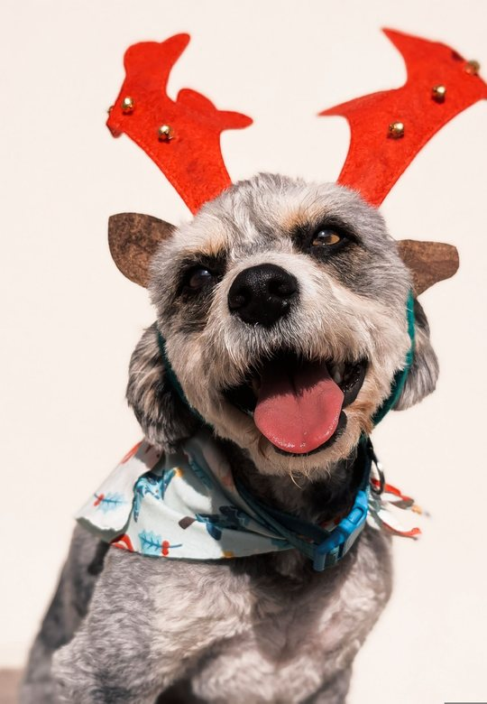
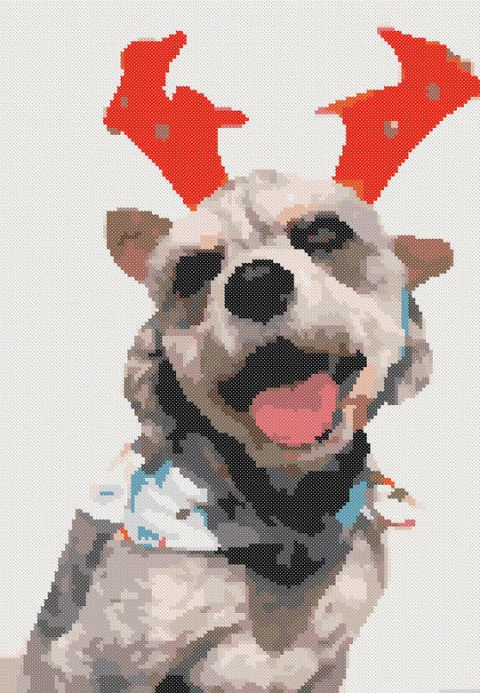

What Photo Makes a Good Cross Stitch Pattern? 8 Checks Before You Chart
The pattern can only be as good as the photo. A few seconds of checking before you chart saves weeks of stitching something that doesn't look like your pet. Here are the eight things to look at, and what to do when the photo isn't perfect.


The 8 checks
- The subject is big in the frame. Crop until the head and chest fill most of the picture. Whatever is small in the photo becomes a few stitches in the pattern.
- The eyes are sharp. Zoom in on the eyes: if they are soft, the pattern will be too. People recognise a pet by its eyes first.
- Soft, even light. Daylight from a window is ideal. A flash makes white blobs on fur and red or green eyes; harsh sun makes black shadows that turn into one dark block of stitches.
- The pet stands out from the background. A dark dog on a dark sofa merges into it. Light against dark (or the other way round) keeps the outline.
- A simple background. Grass, a blanket, a plain wall. A busy room turns into confetti: hundreds of single stitches of random colors. You can also leave the background unstitched.
- Enough pixels. Each stitch needs a few pixels of the photo. For a 150 × 200 stitch pattern, a photo of at least 600 × 800 pixels works; any modern phone photo is fine, but a screenshot of a screenshot is not.
- True colors. Turn off beauty filters and strong color effects. Floss is matched to the photo's colors, so a warm filter makes a grey cat orange.
- Looking at the camera, at eye level. A photo taken from above makes a big head and tiny paws. Get down to the pet's level.
When the photo isn't perfect
- Too dark: brighten it a little in the phone's photo editor before charting. Dark areas otherwise merge into one color.
- Busy background: leave the background unstitched, or stitch it in one plain color.
- Slightly blurry: make the pattern smaller. At 80 stitches across, a small blur doesn't show.
- Several pets in one photo: chart each one separately at the same size; side by side they look like a set.
Check the result as stitched, not as symbols
Before you buy floss, look at a preview of how the finished piece will look, from arm's length. If the eyes or the nose get lost, crop tighter or make the pattern bigger rather than adding colors.
Try your photo on Android. Nitki makes the pattern in a minute: choose the size and the number of DMC colors, see how it looks
stitched and get the skein list and a printable PDF. Making and previewing patterns is free; you pay only to print or stitch.
Get Nitki on Google Play
Get Nitki on Google Play